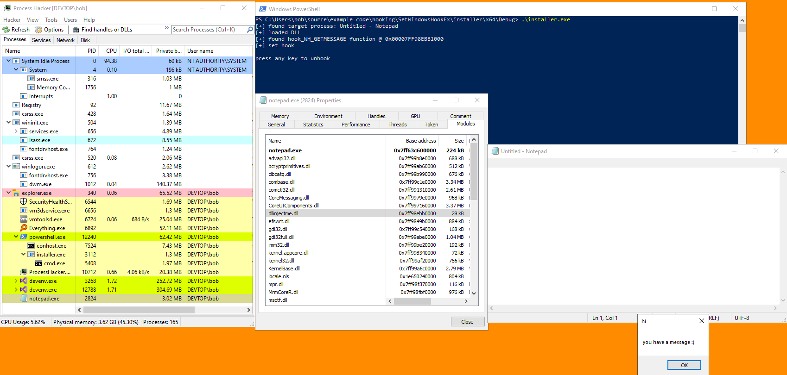

# SetWindowsHookEx Hooking
SetWindowsHookEx is the official way to install hooks using the Windows API.
https://docs.microsoft.com/en-us/windows/win32/winmsg/using-hooks#installing-and-releasing-hook-proceduresYou won't be able to hook individual Windows APIs with SetWindowsHookEx,
instead it hooks things like window messages, keyboard/mouse events, etc.
Here are the hook types you can set:
https://docs.microsoft.com/en-us/windows/win32/winmsg/about-hooks#hook-typesHook procedures are the code that runs when the hooked function is called.
Hooks are installed in chains.
When a hooked function is called, it will pass the message to each hook procedure in the chain 1 by 1.
Hooks installed with
SetWindowsHookEx are installed at the beginning of the chain.
A hook procedure can pass the message to the next hook in the chain using
CallNextHookEx.
## How-to
This is the most common way to install hooks using SetWindowsHookEx, and is the one outlined on MSDN.
https://docs.microsoft.com/en-us/windows/win32/winmsg/using-hooks#installing-and-releasing-hook-proceduresYou create:
• a DLL containing an exported hook procedure (the code that will run when a hooked event occurs),
• an installer program which install the hook into the target process (or globally)
Your hook installer program will:
•
LoadLibrary - retrieve a handle to the DLL containing the hook procedure
•
GetProcAddress - get the address of the hook procedure in the DLL
•
SetWindowsHookEx - call SetWindowsHookEx and specify the hook type, the address of the hook procedure function, a handle to the DLL containing my hook procedure, and the thread to target
◇ if
dwThreadId is set to
0, the hook will target all threads i.e. the hook will be global
SetWindowsHookEx will then load the library (DLL) into the target process using
LoadLibrary.
To remove the hook, call
UnhookWindowsHookEx in the installer.
This won't, however, free the library from the target process.
## Demo - Hook Installer + DLL - Hooking WH_GETMESSAGE
I'll set my installer to hook
WH_GETMESSAGEHooking WH_GETMESSAGE isn't particularly useful, I'm just showing you how for the sake of a demo.
### DLL
This is a DLL containing an exported hook procedure.
This DLL will be injected into other processes.
Here, my hook procedure (hook function) is called
hook_WH_GETMESSAGE.
This is the code that will run whenever a message is sent to my target process's window.
https://docs.microsoft.com/en-us/windows/win32/winmsg/about-hooks#wh_getmessageThe function will spawn a MessageBox, and then proceed to the next hook.
/*
DLL to be injected into applications by hook installer.
*/
#include <Windows.h>
__declspec(dllexport) LRESULT CALLBACK hook_WH_GETMESSAGE(int nCode, WPARAM wParam, LPARAM lParam)
{
MessageBoxA(NULL, "you have a message :)", "hi", MB_OK);
return CallNextHookEx(NULL, nCode, wParam, lParam);
}
BOOL WINAPI DllMain(HINSTANCE hinstDLL, DWORD fdwReason, LPVOID lpReserved)
{
switch (fdwReason)
{
case DLL_PROCESS_ATTACH:
MessageBoxA(NULL, "hey! i've been attached :)", "smile", MB_OK);
break;
case DLL_THREAD_ATTACH:
break;
case DLL_THREAD_DETACH:
break;
case DLL_PROCESS_DETACH:
break;
}
return TRUE;
}
### Installer
Here is my hook installer program.
I'm targetting Notepad.exe
/*
Hook installer that targets a Notepad window.
*/
#include <stdio.h>
#include <Windows.h>
BOOL InstallHook(void)
{
BOOL okay = TRUE;
BOOL b_ret = FALSE;
HWND h_target_wnd = NULL;
DWORD target_pid = 0;
DWORD target_tid = 0;
HMODULE hmod_dll = NULL;
HHOOK h_hook = NULL;
char target_window_name[] = "Untitled - Notepad";
char dll_path[] = "C:\\Users\\bob\\source\\example_code\\hooking\\SetWindowsHookEx\\dllinjectme\\x64\\Release\\dllinjectme.dll";
char hook_function[] = "hook_WH_GETMESSAGE";
HOOKPROC hook_function_addr = NULL;
// get process ID and thread ID of target process
h_target_wnd = FindWindowA(NULL, target_window_name);
if (h_target_wnd == NULL)
{
printf("failed to find window \"%s\": %d \n", target_window_name, GetLastError());
okay = FALSE;
return okay;
}
printf("[+] found target process: %s \n", target_window_name);
target_tid = GetWindowThreadProcessId(h_target_wnd, &target_pid);
// load DLL containing hook
hmod_dll = LoadLibraryA(dll_path);
if (hmod_dll == NULL)
{
printf("failed to load DLL: %d \n", GetLastError());
okay = FALSE;
return okay;
}
printf("[+] loaded DLL \n");
// retrieve address of exported hook function in DLL
hook_function_addr = (HOOKPROC)GetProcAddress(hmod_dll, hook_function);
if (hook_function_addr == NULL)
{
printf("failed to find addr of exported HookMe function: %d \n", GetLastError());
okay = FALSE;
return okay;
}
printf("[+] found %s function @ 0x%p \n", hook_function, hook_function_addr);
/*
Install the hook into the target process.
If SetWindowHookEx's dwThreadId is set to 0, this hook will be global and SetWindowsHookEx will inject your DLL into all processes.
*/
h_hook = SetWindowsHookExA(WH_GETMESSAGE, hook_function_addr, hmod_dll, target_tid);
if (h_hook == NULL)
{
printf("failed to set hook: %d \n", GetLastError());
okay = FALSE;
return okay;
}
printf("[+] set hook \n");
// pause execution of this hook installer program. upon key press, remove hook
printf("\npress any key to unhook \n");
system("pause > nul");
b_ret = UnhookWindowsHookEx(h_hook);
if (b_ret == FALSE)
{
printf("failed to remove hook: %d \n", GetLastError());
okay = FALSE;
return okay;
}
printf("[+] hook removed! \n");
return okay;
}
int main(void)
{
InstallHook();
return 0;
}
### Demo
Both the DLL and hook installer programs above are compiled as x64 Release.
Running on Windows 10 x64 2004.
I've started a 64bit Notepad process and run my installer.
We see that the hook has been set and that in Notepad's
Modules that our DLL is present -
dllinjectme.dllWithin Notepad we see that a MessageBox has spawned telling me that Notepad has received a window message.
